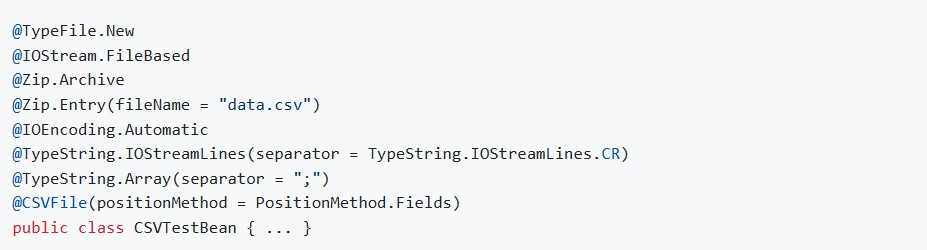

About me
Hello everyone, my name is Alexandru Agache and I am a java developer living in Munich, Bavaria.
My passion for Java has
What would you say the following code snippet does ?
Well, if you guessed that it creates a file, then opens a IOStream on it, reads it as a Zip archive, seeks and streams the File Entry named "data.csv", identifies the used encoding and opens a Reader on it, reads the content line by line, reads each line in a String Array and finally parses the csv content in a Stream of Java Beans, than you are probably right. And to be accurate it also does the complete reverse process when saving is called.
Want to know more ? Have a look at the Functional Annotations repository on GitHub.
© Alexandru Agache 2024
Note: Page is under construction.